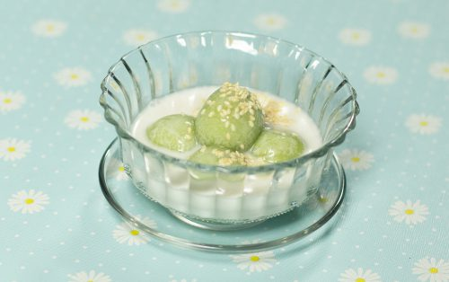

วัตถุดิบไส้
1.มะพร้าวขูด 250 กรัม
2.น้ำตาลมะพร้าว 250 กรัม
3.น้ำมะพร้าว 50 มิลลิลิตร
4.เกลือสมุทร ½ ช้อนชา
วัตถุดิบแป้ง
1.แป้งข้าวเหนียว 500 กรัม
2.น้ำดอกอัญชัน 50 มิลลิลิตร
3.น้ำใบเตย 50 มิลลิลิตร
4.น้ำมะพร้าว 50 มิลลิลิตร
5.น้ำกระเจี๊ยบ 50 มิลลิลิตร
วัตถุดิบน้ำกะทิ
1.หัวกะทิ 500 มิลลิลิตร
2.น้ำตาลทราย 50 กรัม
3.เกลือสมุทร 1 ช้อนชา
4.ใบเตย 1 มัด
5.งาขาวคั่ว ตามชอบ
วิธีทำขนมโคกะทิ
ทำไส้และแป้งขนมโค
1.นำหม้อขึ้นตั้งไฟปานกลาง ใส่น้ำตาลมะพร้าวลงไป ตามด้วยน้ำมะพร้าว เกลือ คนจนละลายเป็นเนื้อเดียวกันและเดือด
2.ใส่มะพร้าวขูดลงไป ผัดให้แห้งและหอม จากนั้นยกออกจากเตา และพักไว้ให้เย็นสนิท
สอดไส้ + ต้ม
1.หยิบแป้งขึ้นมาหนึ่งหยิบมือแล้วปั้นเป็นลูกกลม ๆ บีบให้แบนความหนาประมาณ 2 มิลลิเมตร จากนั้นหยิบไส้ที่ผัดไว้ขนาดเล็กกว่าแป้ง จับให้เป็นก้อน ๆ แล้ววางลงบนแป้ง ห่อและปั้นให้เป็นลูกกลม ๆ วางบนถาดเตรียมไว้ ทำจนแป้งและไส้หมด
ทำน้ำกะทิ + จัดเสิร์ฟ
1.นำหม้อขึ้นตั้งไฟปานกลาง เทหัวกะทิลงไป ตามด้วยเกลือสมุทร น้ำตาล และใบเตย คนจนละลายเป็นเนื้อเดียวกัน และเดือด
2.ตักใบเตยออก โรยงาขาวคั่ว และยกออกเจาพักไว้
3.นำขนมโคใส่ถ้วย หรือหม้อที่จะจัดเสิร์ฟ ราดน้ำกะทิที่เตรียมไว้ลงไป และโรยงาขาวคั่ว พร้อมเสิร์ฟจ้า